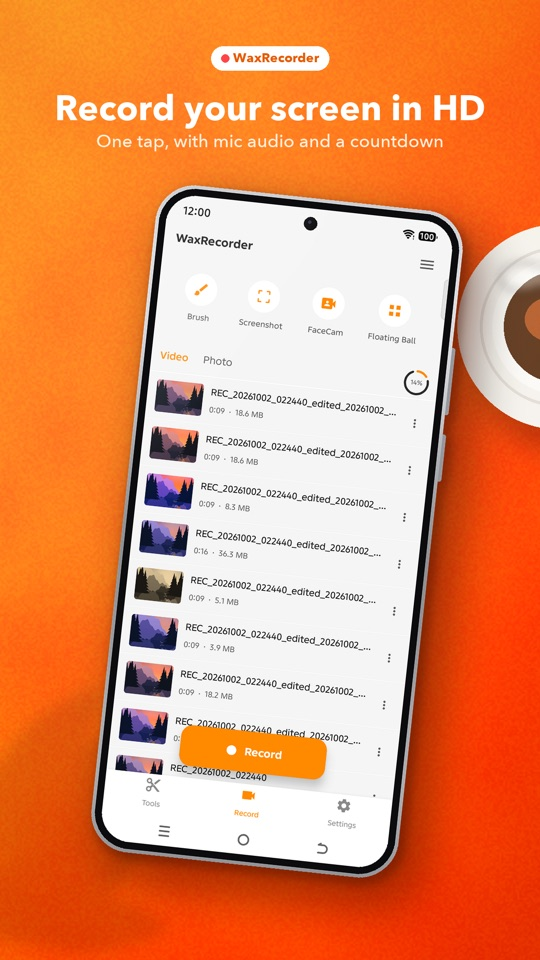
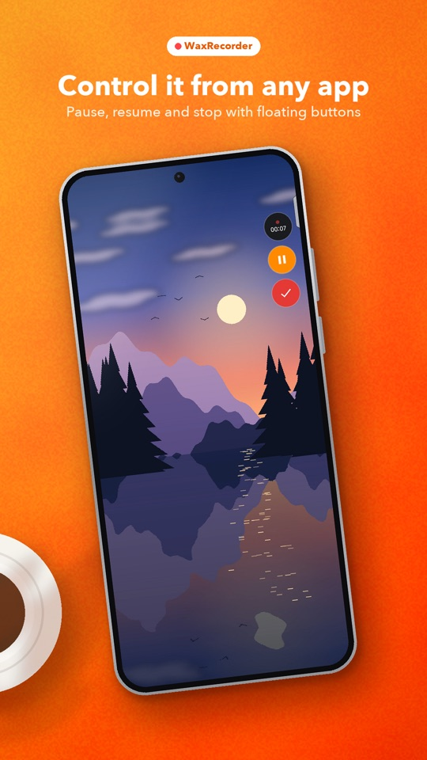
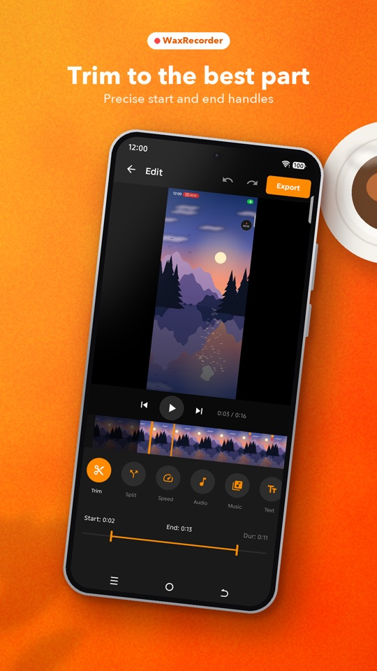
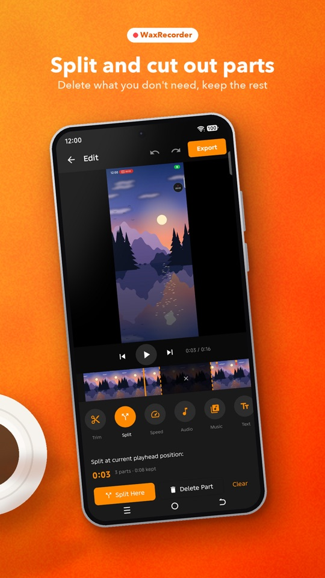
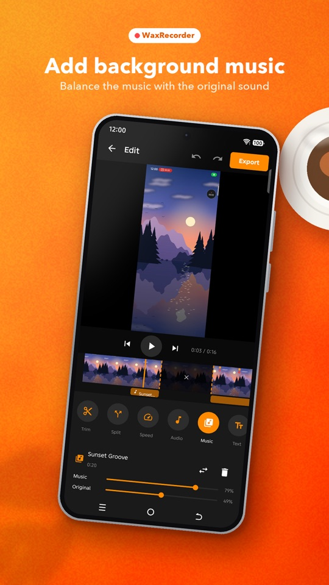
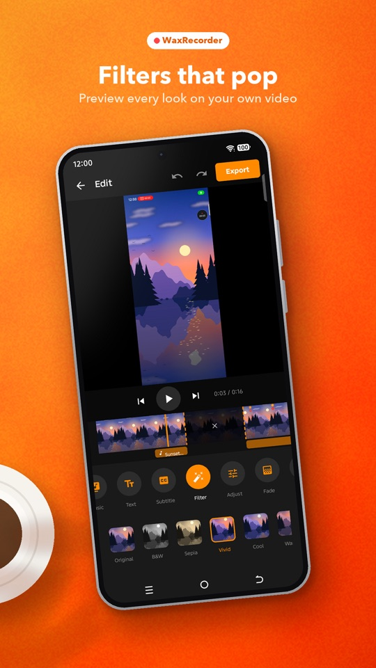
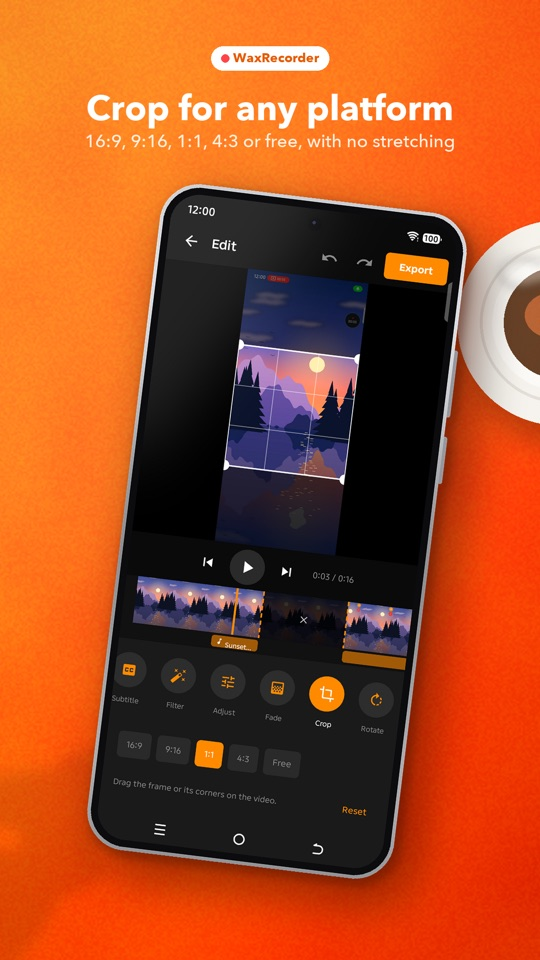
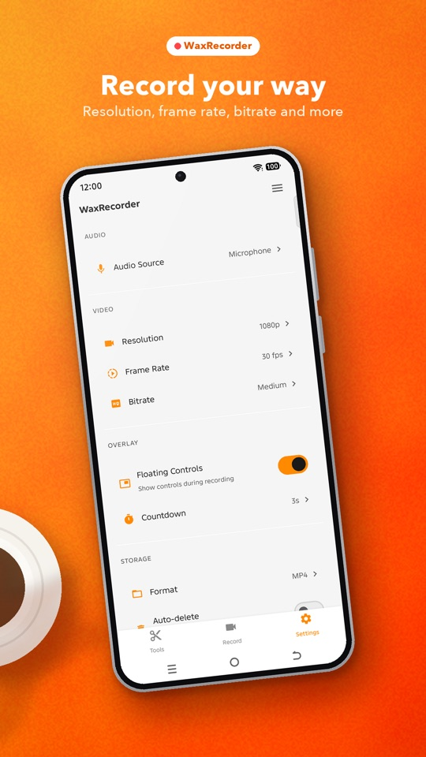

REC
Record. Edit. Share.
WaxRecorder is a simple screen recorder with a built-in video editor. Record tutorials, gameplay and app demos, then polish them without leaving the app.

Features
Everything you need to make a clean screen video
Record in one tap, control it from any app, and edit the result on your phone.
HD screen recording
- High-quality recording with one tap
- Record your voice with the microphone
- Countdown before recording starts
- Floating controls to pause, resume and stop from any app
Face cam and drawing
- Face cam bubble so viewers can see you
- Brush tool to draw and highlight on screen
- Take screenshots from the floating toolbar
Built-in video editor
- Trim, split and delete parts
- Crop to 16:9, 9:16, 1:1, 4:3 or free
- Filters, brightness, contrast and saturation
- Fade in and out, background music, MP4 export
Photo editor
- Edit your screenshots
- Crop, rotate, filters and adjustments
- Add text and markup
Screenshots
See it in action







Privacy
Your recordings stay on your phone
WaxRecorder has no account system, no ads and no analytics. It does not upload or share your videos. Read the privacy policy.
No accountOpen the app and record. No sign-in.
Stored on deviceVideos and screenshots save to your Movies and Pictures folders.
No data collectedNothing is sent to BeamLab or third parties.